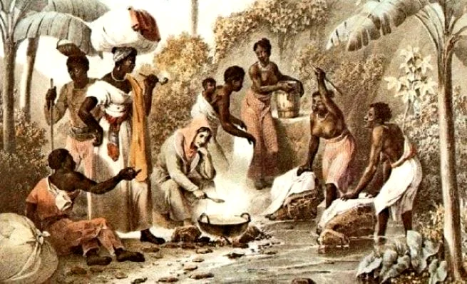
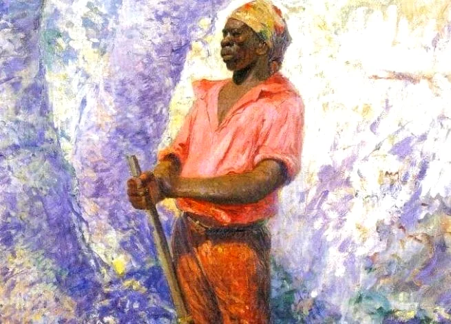

Zumbi dos Palmares foi o líder da resistência negra do Quilombo dos Palmares, localizado ao sul da Capitania de Pernambuco, na parte inferior do rio São Francisco, na Serra da Barriga, região do atual Estado de Alagoas.
Zumbi dos palmares nasceu dentro do Quilombo dos Palmares, provavelmente por volta de 1655. Era neto da princesa negra Aqualtune, e sobrinho de Ganga Zumba e Gana Zona, chefes dos mocambos mais importantes do Quilombo, que era constituído por dezenas de aldeias.
Recebeu o nome de Zumbi para sensibilizar o deus da guerra. Segundo a lenda, Zumbi foi criado por um padre que lhe deu alguma instrução, e ainda jovem voltou para seu povo.
Formação do Quilombo dos Palmares Na época do Brasil colônia, desde 1600, alguns escravos fugitivos dos engenhos de açúcar já se refugiavam na serra da Barriga, região do atual Estado de Alagoas. Entre 1602 e 1608, duas entradas sob o comando de Bartolomeu Bezerra, chegaram até a serra, sem conseguir localizar os fugitivos.
Em 1630, o quilombo já estava formado. Nessa época, Pernambuco vivia sob o domínio holandês e a guerra intensificava a fuga dos escravos para o quilombo, já conhecido como Quilombo dos Palmares.
Entre 1644 e 1645, expedições holandesas foram organizadas para destruir o quilombo, sem sucesso. Em 1654, os holandeses foram expulsos do Nordeste e a decadência econômica diminuiu a necessidade de mão de obra escrava. Nessa época, Palmares era uma longa faixa situada na parte norte do curso inferior do rio São Francisco, hoje no Estado de Alagoas.
Zumbi dos Palmares crescia livre dentro do quilombo. Da escravidão só conhecia as terríveis histórias que os mais velhos lhe contavam, lembrando a morte nos porões dos navios e a escravidão nas senzalas. Casou-se com a guerreira negra Dandara e com ela teve três filhos.
De simples refúgio de escravos fugidos, Palmares transformou-se em um centro de resistência contra todo o sistema escravocrata. Apesar do florescente comércio entre Palmares e os colonos da região, a paz era apenas temporária. Os fazendeiros não podiam permitir que os quilombos estimulassem a fuga dos escravos.
Acordo de Paz Entre 1671 e 1674, duas expedições foram organizadas contra o quilombo, com poucos resultados. Em 1675, durante a invasão das tropas de Manuel Lopes foi revelada a vasta extensão de Palmares, com mais de 2 mil casas, fortificadas com estacas. Nos combates que se seguem, Zumbi foi baleado duas vezes, mas continuou a lutar. Seu nome e sua coragem começavam a virar lenda.
Em 1677, Fernão Carrilho, destacado pelo governador de Pernambuco, Pedro de Almeida, atacou o mocambo de Aqualtune. Ganga Zumba e a maioria de seu povo fugiu. Depois de sucessivas vitórias, Carrilho instala um arraial em pleno coração dos Palmares.
Em 1678, Ganga Zumba manda ao Recife, três de seus filhos e mais doze negros, acompanhando um emissário do governador, para fazer um acordo de paz. Palmares ganhou condição de vila e Ganga Zumba torna-se mestre-de-campo.
Morte do Líder Zumbi Zumbi não concordou com o acordo de paz feito por Ganga Zumba, para ele não se tratava só de viver livre, mas libertar os que ainda eram escravos. Recebeu apoio de vários mocambos. Ganga Zumba perdeu terreno e foi envenenado. Zumbi era o novo líder guerreiro e enfrentou batalhas sangrentas.
Em 1691, o bandeirante Domingos Jorge Velho, com mais de mil homens, invadiu o mocambo do Macaco, onde Zumbi comandava a resistência. Depois de várias lutas, Zumbi fogiu para Porto Calvo. Em 1694, novo ataque destruiu o quilombo. Comandados por Zumbi e entrincheirados na serra da Barriga, os quilombolas resistiram até a morte.
Zumbi dos Palmares foi capturado no dia 20 de novembro de 1695, depois de ter sido traído por um prisioneiro que trocou sua vida pela do líder, foi decapitado e sua cabeça levada para o Recife, que por ordem do governador foi colocada em exposição pública.